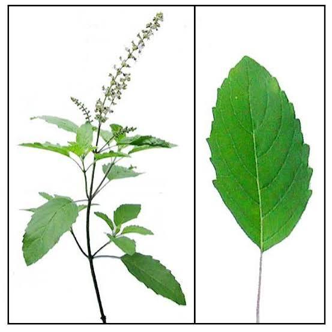

Identify plants with a photograph.
Capture a plant or leaf photograph to analyze its morphological characteristics, determine species identity, and consult verified pharmacological and botanical monographs.

Species identification workspace
Select image focus mode, provide an input photograph, and review model inferences.
Select or drop a plant photograph
Upload a high-resolution photo or activate the device camera.
Awaiting photograph input
Upload a specimen photograph or capture one via camera. The model pipeline will detect whether the image represents a leaf or whole plant, evaluate morphological features against 90 trained botanical classes, and retrieve corroborated scientific monographs.
How the identification pipeline works
A multi-stage computer-vision system designed to minimize cross-morphology misclassification.
Capture
Take a focused photograph of a single leaf or an entire plant. Natural, diffuse lighting and clear venation structure produce optimal classification reliability.
Classify
A Stage 1 classifier routes the image into specialized leaf or whole-plant models, calculating normalized softmax probabilities across 90 botanical species.
Explore
Correlate predictions with verified monographs containing botanical taxonomy, traditional Ayurvedic applications, parts utilized, and contraindications.
Leaf close-up
Evaluates vein architecture, margins, serration patterns, apex, and petiole morphology. Recommended for distinguishing closely related species like Tulsi vs Neem.
- Center a single primary leaf in frame
- Avoid extreme shadows or glare
- Capture underside or top surface clearly
Whole plant
Analyzes shrub growth habit, branching structures, foliage clustering, and stem texture. Useful for field surveys where individual leaf access is difficult.
- Isolate the target specimen from background flora
- Include root base and stem structure where visible
- Ensure whole plant occupies 70%+ of frame